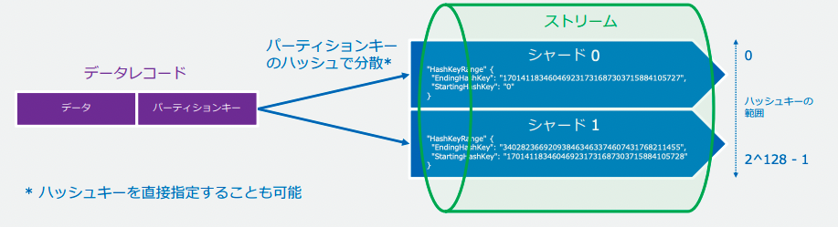

18. Kinesis¶
ストリーミングデータの配信機能を提供するマネージドサービス
サーバーがAWS管理のため、ユーザーはストリームデータの処理に集中することができる。
そもそもストリーミングデータとは、データの連続的な変化によって意味を持つデータのことであり、 これらのデータは抽出（Extracet）変換(Transform)書き出し（Load）ETL処理をされて保管される。
Kinesisは、ストリーミングデータを扱うために４つのサービスが提供されている
Kinesis Data Streams:各種AWSサービスにストリームデータをリアルタイムに配信
Kinesis Data Firehose:ストリームデータを準リアルタイムでデータレイクや分析ツールに蓄積する
Kinesis Data Analytics:Streams/Firehoseに配信されたデータをリアルタイムで分析変換
Kinesis Video Streams:動画をストリームデータとしてAWSに取り込み、各種サービスに配信
18.1. Kinesis Data Streams¶
異なるシステムやサーバー、デバイスから送信されるストリームデータを受信して、各種AWSサービスにリアルタイムに配信するサービス。
メリットとしては以下が挙げられる
簡単な管理と低コスト
リアルタイムと柔軟性あるパフォーマンス
安全で耐久性あるストレージ
1MB/s 1000rec/sの書き込み性能
2MV/s 5rec/sの読み込み性能
AWSのリソースに配信されるが、Consumer側で作り込みが必要になる点に注意。

18.1.1. Data Streamsの登場人物¶
Producer
Consumer
ストリーム: kafkaだとTopicに対応、データのグループ
シャード: kafkaだとPartitionに対応、ストリームの分割単位
18.1.2. kinesisの分散処理¶
データレコードのパーティションキーを利用して分散する

分散されたデータはシャード毎にユニークなシーケンス番号が割り振られ、データ処理時にシーケンス番号でレコード取得開始ポジションを指定する
18.1.3. kinesisのProducer実装¶
18.1.3.1. Kinesis Agent¶
kinesisサービスにデータを収集して取り込むOSSのアプリケーション
エージェントでモニタリングするファイルのパターンと送信先ストリームを指定
前処理の機能を提供
送信前のバッファリングも可能
18.1.3.2. Kinesis Producer Library(KPL)¶
kinesis SStreamsにデータ送信するOSSの補助ライブラリ
Aggregation:複数のデータをまとめて送信可能
Collection:複数のレコードをバッファリングして送信
18.1.3.3. Fluent plugin for Amazon kinesis¶
kinesis StreamsとFirehoseにイベント送信するOSSのFluentdプラグイン
Fluendをログ収集に利用していると、このプラグインを利用するだけでAmazon kinesisシェのデータ投入が可能
18.1.3.4. Kinesis Data Generator(KDG)¶
テストデータを簡単に送信することが可能
HTMLとJSで実装されたOSSテスト用のUI
GithubにホストされたUIや性的ウェブサイトホスティングが可能
18.1.4. kinesisのConsumer実装¶
18.1.4.1. Kinesis Client Library(KCL)¶
kinesisアプリケーションを作成可能
Java/Ruby/Pythonの開発に利用することが可能
KCLアプリは以下3つのコンポーネントを含む
Record Processor; シャードから取り出したデータを処理するプロセッサー単位
Record Processor Factory:Record Processorを作成する
Worker: ここのAppインスタンスとマッピングする処理単位
18.1.5. Data Streamの暗号化¶
通信の暗号化(HTTPS)
HTTPSエンドポイントが準備されており、 HTTPSによるデータ通信でデータを暗号化することができる保存中の暗号化（KMS)
KMSを利用することでサーバーサイド暗号化を行うことが可能
18.1.6. 保存期間¶
デフォルトでは24時間の保存期間が設定されており、最大で一年

18.1.7. シャードのパフォーマンス調整¶
パフォーマンスの調整はシャーディングの分割や結合を通じて行うことができる。 Kinesisでは、シャードに対して課金されるため、分割すると性能は上がるが、コストは増加する点に注意。
リシャーディングを行う際には、メトリクスを使用してホットシャードとコールドシャードを分析する
ホットシャード：予想よりも多くのデータを受信するシャード
コールドシャード：予想よりも少ないデータを受信するシャード
18.1.8. トラブルシューティング¶
18.1.8.1. ProvisionedThroughputExceededException¶
現在のパフォーマンスでは要求された量のデータが処理できていないことが原因のエラー
kinesisシャードの読み取り性能は
1秒あたり5件
1秒あたり2MB
GetRecords処理では、レコードのバッチを取得できて、最大10MBまで取得可能で、これを超えると、ProvisionedThrouphputExceededExeptionエラーが発生する。
kinesisシャードの書き込み性能は
1秒あたり1000レコード
1秒あたり1MB
対策として、以下が挙げられる
エクスポ年シャルバックオフアルゴリズムによる、再試行の感覚を長くする対策
GetRecord処理をする際にバッチ処理を高速分散化する対策
18.2. kinesi Data Streams on demand¶
2021年に発表された新たな機能
シンプルな操作性
シャードの管理が自動化され、より一層管理を簡素化することが可能柔軟なスケーリング
データ量の変化に応じて自動でキャパシティをスケールコスト削減
従量課金
過去30日間のピーク時の2倍以上のトラフィックを吸収するのに十分な容量を持つ。 これを超えた場合も15分以内にスケールアウトする。
18.3. Kinesis Data Firehose¶
S3、Redshift、OenSeearchなどのストレージサービスやDBにストリームデータをロードさせるサービス。 Redshiftに保存するためには一度S3に格納する必要がある点に注意
Kinesis Data FirehoseはLambdaと統合されており、受信したデータに変換をしてから、配信することが可能。
Data Streamsと比較して、Consumer側での作り込みが不要であるが、60secほどのラグがあるため、準リアルタイムな機能となる。
18.4. Kinesis Data Analytics¶
Kinesis Data streamsとKinesis Data Firehoseに格納されたストリームデータに対して分析が可能なサービス
SQLなどを利用して、データ分析を行い、Lambdaと統合されているためデータ形式の変換を行なうことも可能。
Kinesis Data Analyticsで分析した後は、Firehoseで分析結果を蓄積したり、Streamsへ流してよりリッチな分析を行うことが可能。 処理の内容自体は、Streamsでも可能だが、Consumer側の作り込みをせずに分析をすることができる点が大きなメリット。

18.5. kinesis Video Streams¶
ビデオカメラなどのデバイスから送られてくる動画データをストリームデータとしてAWSに取り込み、ストリーミング（データ転送）するサービス。
データ分析を行う際には、Kinesis Video Streams Parser Streams Libraryを利用した動画解析や機械学習サービスであるAmazon Rekognition VideoやSage Makerとの連携が可能。
データ分析を行うほか、WebRTCを使用して、レイテンシーを短くすることで、オンライン会議のような双方向での配信も可能である。